UCLA coursework, 2014 to 2018
Simulating an Epidemic: Yellow Fever Modeling in Veracruz, Mexico
Introduction:
The premise of this project is to illustrate the significance of model building and System Dynamics for epidemics - an applicable realization as the rapid spread of infectious diseases is a common trope throughout history. In fact, many epidemiologists predict that a pandemic the scale of the Spanish influenza will soon sweep the globe (COVID-19). Yellow Fever is transmitted through mosquitos, specifically the Aedes aegypti species. Monitoring the infected is complicated; this viral disease has different impacts on each person, making predictions on the duration and severity of Yellow Fever difficult to pinpoint.
The models below simulate the proliferation of Yellow Fever through varying scenarios and mitigation techniques. While each case offers a new lens on predicting the spread of the viral disease, they all follow a similar backstory: urban diaspora. Individuals will contract Yellow Fever and bring it back to a populated urban center. If the infected person is bitten by a mosquito not carrying the disease, that mosquito will now become contagious.
These simulations are adaptations of a Dynamo model for Yellow Fever outbreaks by Kjell Kalgraf. The figure below is the blueprint for this project's modified simulations.
Kalgraf's Model

Kalgraf's model is based on a real outbreak of Yellow Fever in Veracruz, Mexico (1899). The population of Veracruz was nearly 20,000 people at the time. As the viral disease swept through the urban center, many casualties were suffered - 460 people died every month at the peak of the epidemic. The model predicts the mosquito population to be roughly 500,000. Kalgraf uses this outbreak as a hypothesis of sorts; he garners data based on population sizes, lifecycle of mosquitos, estimated bites per day, and the rates of contraction and recovery, to model the severity of Yellow Fever. Ultimately, this is shown through the comparison of cumulative number of deaths and the surviving, immune population.
The parameters set for mosquitos are as follows. 27,778 mosquitos emerge into adulthood per day. At the height of the epidemic, there are a total of 500,000 mosquitos. The lifespan of a mosquito is 18 days; 4 'blood feeds' are needed throughout their lifetime. Ergo, the average mosquito feeds off 0.2 persons per day - leaving roughly 100,000 bites happening per day. It's discovered that if mosquitos don't bite humans who are infected within their first three days, they are incapable of carrying Yellow Fever for the remainder of their lifetime. However, if mosquitos feed off an infected person within the first 3 days (the initial period) of contracting Yellow Fever, they will carry the disease.
The parameters set for humans are a little more straightforward. A human can only contract Yellow Fever if they are bitten by a mosquito carrying the disease - it cannot be spread by another human. There are three stages to monitoring a disease: Incubation period, Contagious period, and Sick period. An infected person will enter an Incubation period (the # of days between infection and signs of symptoms) for 4.5 days. This is followed by a Contagious period of another 4.5 days, and a Sick period lasting 2.5 days. 90% of humans will recover and become immune to Yellow Fever.
The Feedback Loops in an Epidemic Model
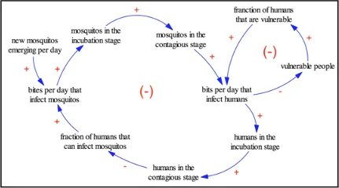
There are two feedback loops in the Yellow Fever model, both of which are Net Negative. The smaller loop on the far right alters the dynamics of the model by adding a fraction of people who are vulnerable to Yellow Fever. The larger loop to the left takes the mosquito population as a whole into account - the mosquitos that newly emerge into adulthood, and the infection rates among humans as a result. Both an increase in vulnerable people and an increase in mosquito will have a negative result on the model.
Modeling Yellow Fever Based on Kalgraf's Predictions - The Human Population
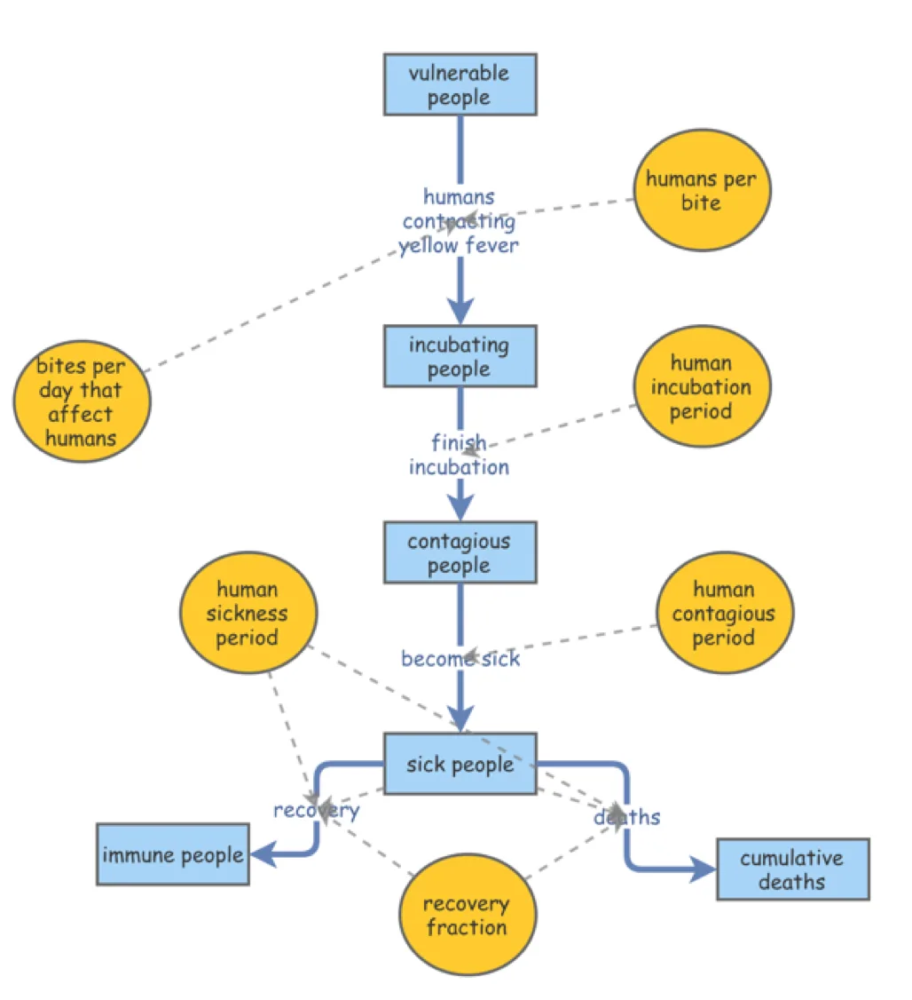
This model is a subset of Kalgraf's original model described prior, with emphasis on the human population. The population follows Kalgraf's study of Veracruz - out of 20,000 people, 100 are ascribed the Incubated phase leaving 19,900 vulnerable.
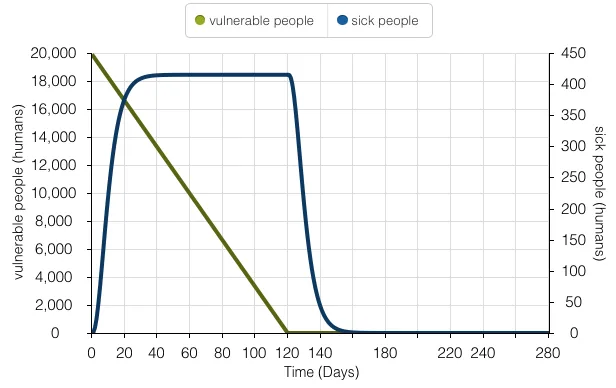
This time series model illustrates the human population's exposure to Yellow Fever over 280 days. During the initial stages of the epidemic, there is an exponential increase in sick people as people carrying Yellow Fever are unaware in the first 4-5 days. However, as the population starts to incubate and follow proper isolation procedures, a linear decline in vulnerable people appears. The amount of sick people tapers off as the amount of vulnerable people declines.
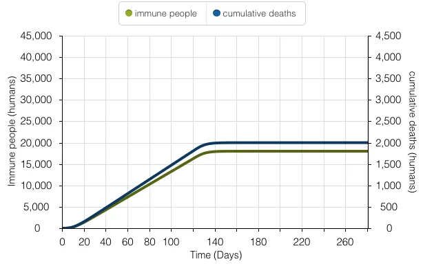
This time series model denotes Kalgraf's overarching goal - to model the number of people who survive Yellow Fever and become immune, versus the number of cumulative deaths. It parallels the 90% survival rate of the disease; 18,000 people survive and become immune, and 2,000 people die.
Analyzing just the human population in Kalgraf's model allows for a more granular understanding of the implications associated with Yellow Fever outbreak rates and human recovery rates. For instance, the model assumes the amount of bites received by infected mosquitos per day will remain constant over time. In reality, the amount of bites per infected mosquito will oscillate; as the human population begins building immunity, the rate of infected mosquitos will decline - and the number of bites received per day will follow. Moreover, holding the stages of Yellow Fever (incubated, contagious, and sick) at finite increments poses issues. For example, recovery rates will differ among person to person. While using Veracruz, Mexico as a case study allowed for predicting the diaspora of Yellow Fever in urban centers, and a better understanding of human recovery rate with real data, it's important to note the prevalence of the city's climate for mosquito reproduction. The tropical climate with little variation from season to season is ideal for mosquitos. Places like Veracruz with high rates of precipitation and overall higher temperatures, will experience a greater possibility of infected mosquitos - and therefore higher rates of bites per day. Places with similar climates to this case study will be exposed to greater rates of Yellow Fever outbreaks.
Modeling Yellow Fever - Simulating Kalgraf's Full Model
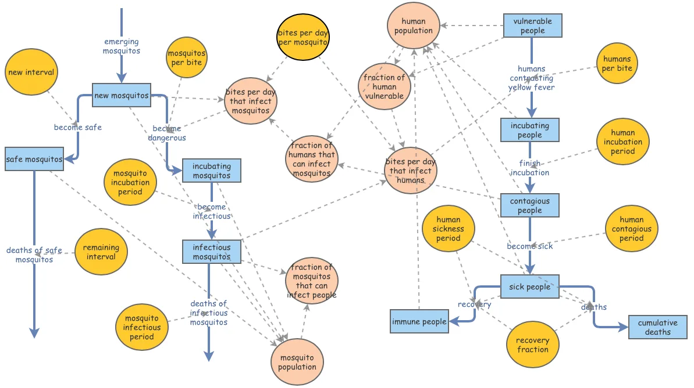
This is a working model of Kalgraf's diagram in its entirety. The parameters set for humans follows the nuanced modeling of the 'Human Population' segment above - initialized with 100 incubating humans, and 19,900 vulnerable humans. The emerging mosquito flow in the model represents the 27,778 mosquitos Kalgraf predicted reach adulthood and can carry Yellow Fever. Out of the 500,000 mosquitos, 417,000 denote 'safe mosquitos.' The remaining 83,000 represent 'new mosquitos.' These numbers are estimates for easier understanding - they are not the specific numbers Kalgraf recorded in Veracruz, Mexico. Those nuanced statistics are stated below.
To better understand Kalgraf's model, a walk-through of formulas derived through the analysis of Veracruz's Yellow Fever outbreak is provided below. The numbers in this breakdown refer to the first model introduced in the project.
- 781 people are in the Incubation Stage, 803 people are in the Contagious Stage, and 450 people are sick. The peak of the Yellow Fever outbreak occurs around day 140, with nearly 450 people becoming sick. The highest volume of deaths per day is 18 people.
- 83,000 mosquitos are characterized as 'new mosquitos' and have the potential of carrying Yellow Fever if they come into contact with an infected human. These mosquitos bite 0.2 people every day - a total reaching over 16,000 per day. Kalgraf predicted 4.2% of these mosquitos will come into contact with an infected individual, making nearly 700 of these 'new mosquitos' carriers of Yellow Fever per day.
- 7,909 mosquitos are set to the incubation stage; 1,945 are in the infectious stage. These 1,945 infectious mosquitos are the catalyst for the peak in Yellow Fever outbreak on day 140.
- 8,103 humans are categorized as 'vulnerable' for the outbreak. To calculate the number of people contracting Yellow Fever, the following formula was used: # of Contagious Mosquitos * Bites/Day * Percent of Vulnerable Human Population or [1,945 * 0.2 * 42.6] = 166 persons per day.
The graphs below offer visual aide to Kalgraf's model through the lens of 3 scenarios: Cumulative Deaths (humans) vs Vulnerable Population, Cumulative Death during the outbreak, and Infectious Mosquitos vs Cumulative Deaths. They serve as visual representations for the statistics recorded above.
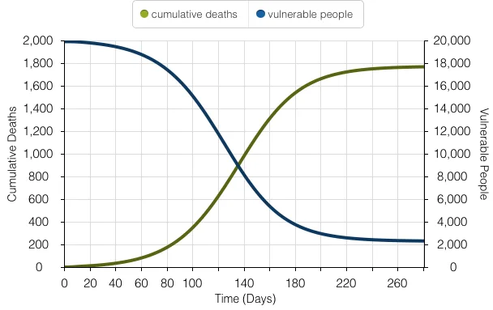
The model above showcases a simulation for cumulative deaths and vulnerable people during the Yellow Fever outbreak.
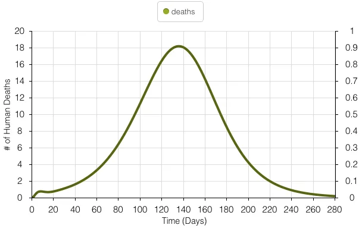
The model above illustrates simulated values for the number of casualties experienced during the Yellow Fever outbreak. The peak number of deaths experienced per day is 18 people and occurs around day 140 of the 280-day outbreak.
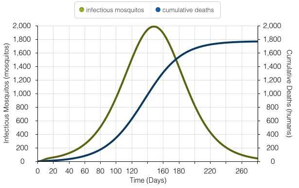
The model above represents the number of mosquitos carrying Yellow Fever and the number of deaths at the peak of the outbreak. At the peak of the outbreak, 1,945 mosquitos are infected.
Sensitivity Analysis - Alterations in Bites Per Day
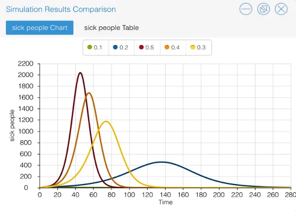
Sensitivity Analysis graphing allows the viewer to inspect the impact of various bites per day per mosquito. The values used oscillate between 10% - 50%. The graph produced illustrates the change in number of sick people, as the number of mosquito bites occurring per day changes. The relationship between bites per day and number of infected people mirror one another. When the initial value of bites per day increases, the amount of sick people increases.
Reducing the Mosquito Population - Implementing a Larvicide Program
The application of a Larvicide Program assumes a reduction in the number of emerging mosquitos. It does not reduce the number of pre-existing adult mosquitos.
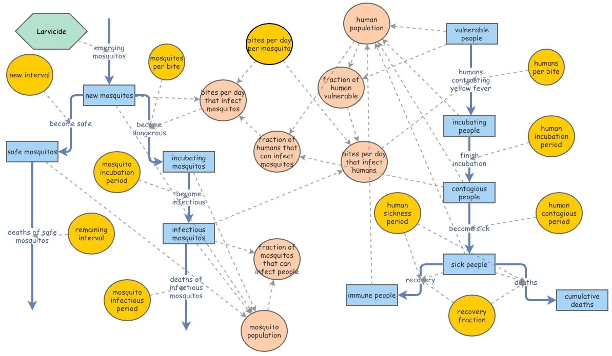
The Larvicide Program is represented as a Converter in the diagram above. It is directly associated with the 'Emerging Mosquitos' flow. 27,778 represents the 'Emerging Mosquitos' population Kalgraf discovered in Veracruz. To visualize the implications of a possible Larvicide Program on this population, the equation for the original flow needs to be changed. The equation for this flow now represents: 27,778 - (27,778 * [Larvicide Program]). The flow equation was then altered to 27,778 – (27,778 * [Mosquito Control Program]). Pause intervals and sliders were set for 10 days and 20 days, allowing a buffer for the days without a mosquito control program to be imagined.
The graphs below illustrate the importance of timing when implementing the Larvicide Program. The success of the Larvicide Program was defined as limiting the number of people impacted by Yellow Fever as 500 or less. The first graph represents a 10-day hiatus on the population, and second graph represents a 20-day hiatus. Both simulations alter the effectiveness of the Larvicide Program on the same scale: 70%, 80%, and 90%. It's implied that a 100% effective Larvicide Program would eliminate all 'Emerging Mosquitos.'
A Proposed Mosquito Control Program: 10-Day Simulations vs. 20-Day Simulations
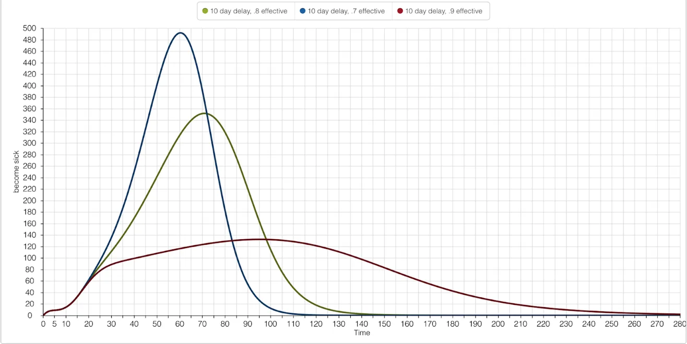
Regardless of the intensity of effectiveness set for the Larvicide Program, the ranges 70% - 90% passed the 500 people or less becoming infected by Yellow Fever success rate of the Program. As one would imply, the higher the magnitude of effectiveness, the less people there were becoming sick. 10 days served as effective parameter to set for the enactment of the Larvicide Program, giving realistic measurements for its hypothetical implementation.
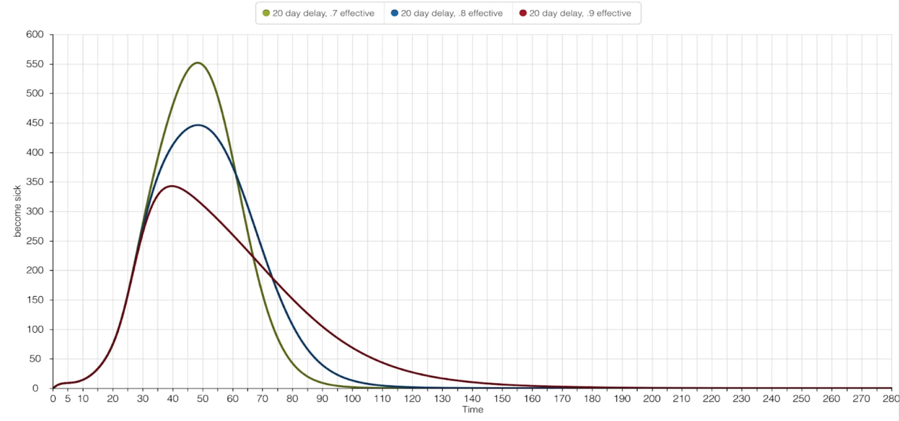
The 20-day graph above tells the viewer how vital the intial start time of the Larvicide Program is. Although the intensity of effectiveness for the three scenarios remained the same - 70%, 80%, and 90% - the 20-day hiatus caused a failure in one of the scenarios. If 20 days pass, and a 70% effective Larvicide Program were applied to the 'Emerging Mosquitos,' 550 people would become sick. This does not meet the standards required for the Program's success. Both an 80% and 90% effective Larvicide Program keep the sick population under 500 people.
A Proposed Isolation Program: The Importance of Cooperation in a 10-Day Simulation
This hypothetical Isolation Program assumes two possibilities: it's possible to detect Yellow Fever during the 4.5-day Incubation Period, and it's possible to isolate all infected individuals before they become contagious. The success of this Isolation Program follows the same criteria as the Larvicide Program: The number of people impacted by Yellow Fever must be 500 or less. The effectiveness of the Isolation Program will range from 40% - 60% (parameters I thought seemed realistic, considering the mixed cooperation among people ordered to stay inside during an epidemic).
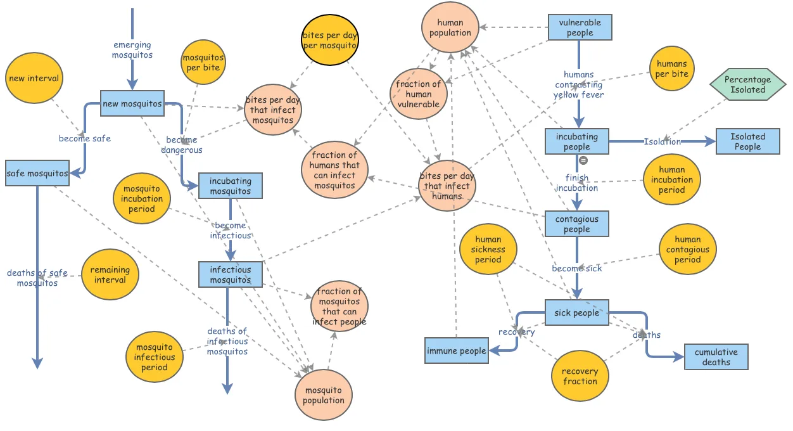
Kalgraf's original model has been modified to include this hypothetical Isolation Program. A newly created 'Isolation' flow links the pre-existing 'Incubating People' Stock to a newly created 'Isolated People' Stock. The 'Percentage Isolated' Converter allows for the modification of effectiveness among the three Isolation Program scenarios.
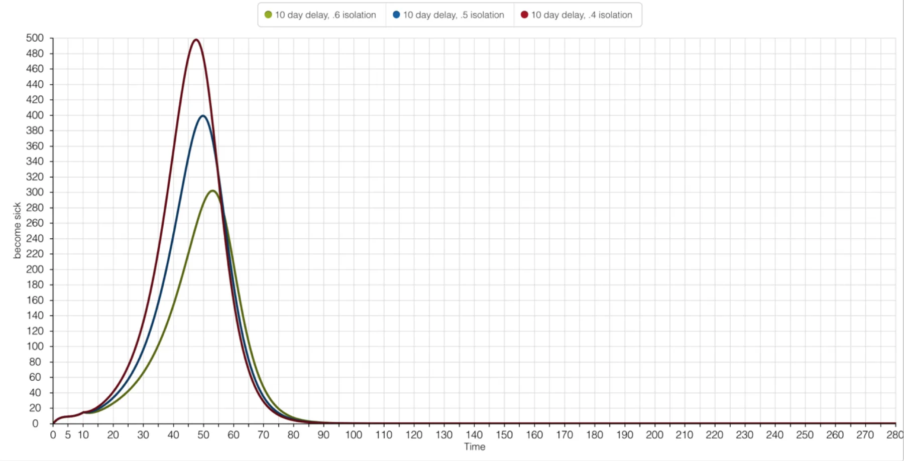
Regardless the magnitude of the Isolation Program effectiveness, all scenarios successfully limited the number of impacted people under 500. A 60% effectiveness of the Isolation Program had a peak number of sick people at 300. A decline in 10% cooperation at the 50% simulation allowed for 100 more people to be impacted by Yellow Fever. The highest margin of people impacted by the disease was when less than 50% of the populated cooperated with the Isolation Program.
Epidemic Control Programs - Larvicide vs Isolation
The Isolation Program offered a safer solution to reducing the number of the people impacted by Yellow Fever, but it relied on the contingency that people would adhere to the mandated stay-at-home order. For the Larvicide Program to be successful, the insecticide needed to be extremely potent - and high rates of the chemical could potentially harm the human population. The safest protocol would be the Isolation Program, which exemplified a quicker recovery rate (80 days) than any of the simulations for the Larvicide Program.